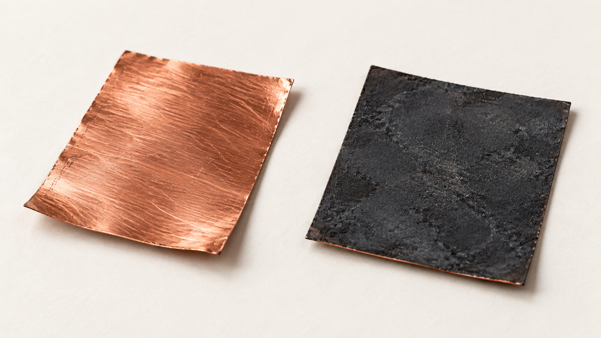
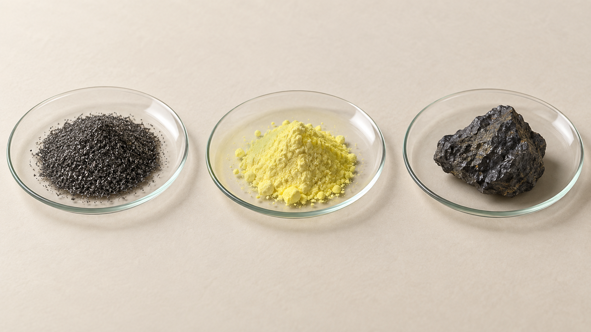
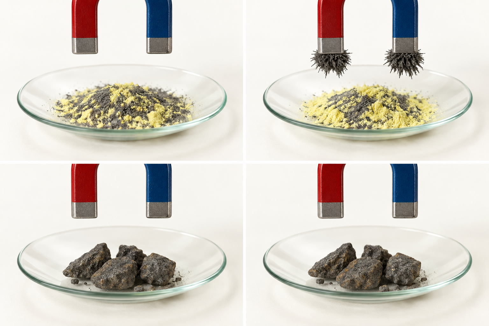
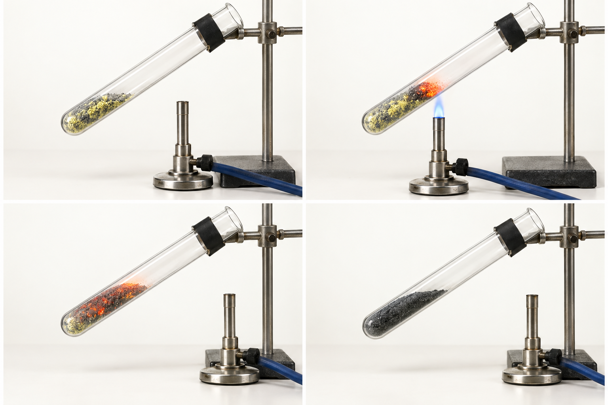
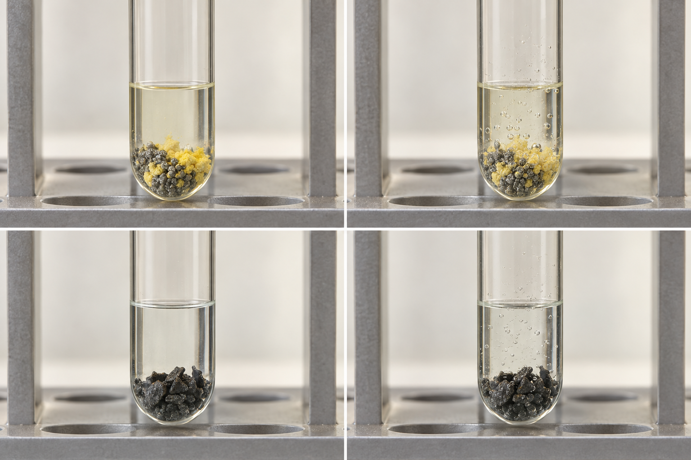
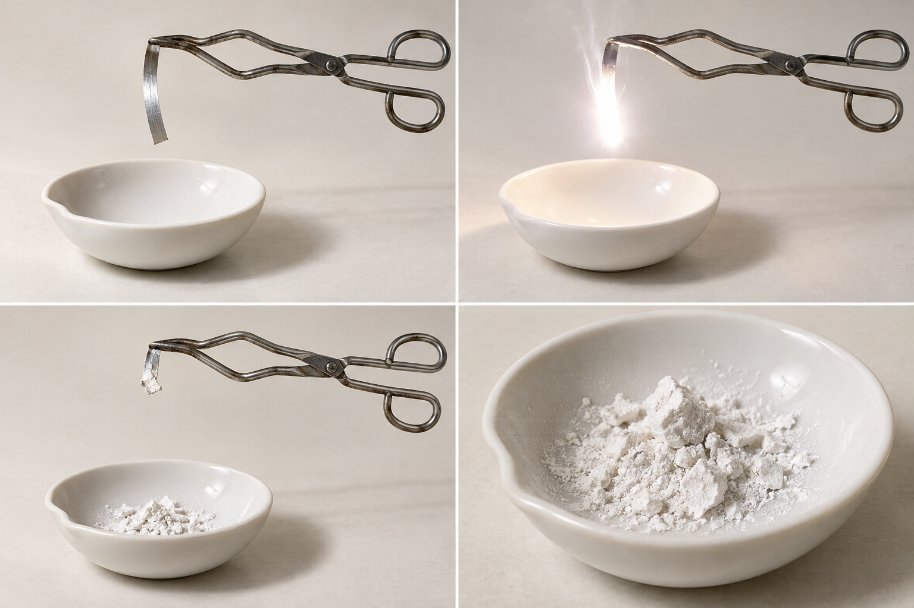
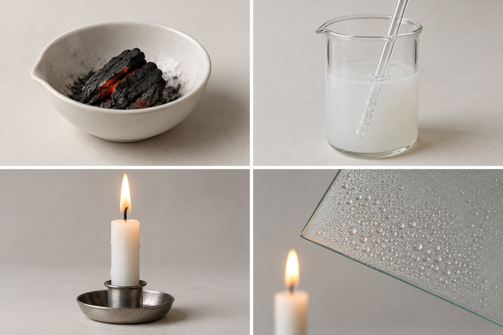
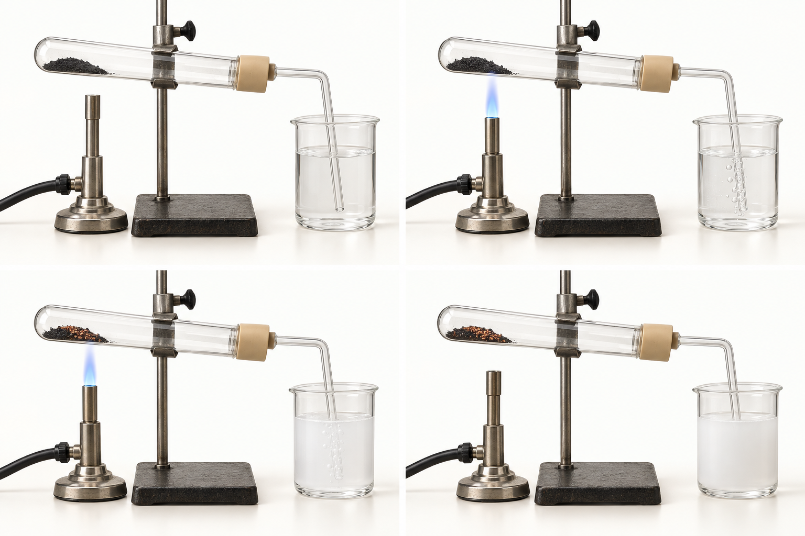
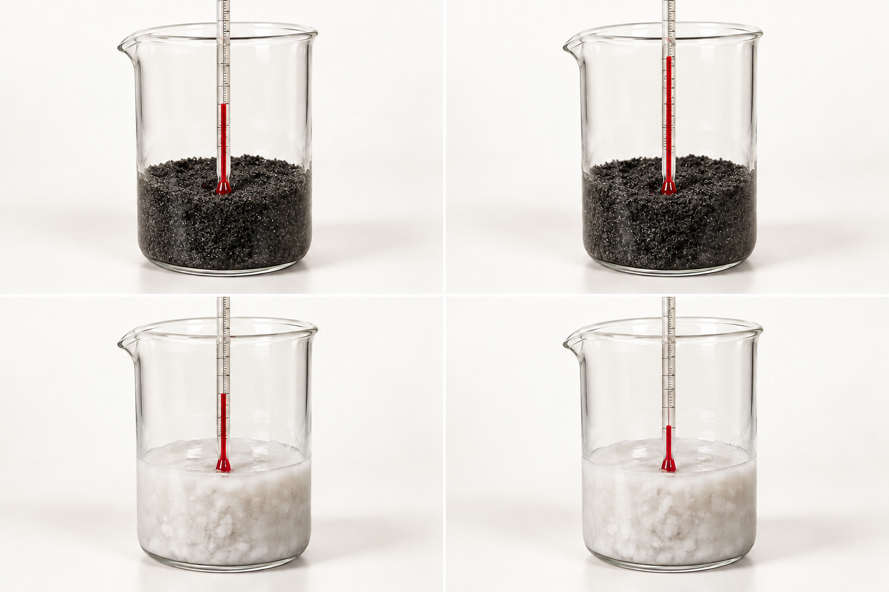

いろいろな 化学変化
鉄と硫黄は、どんな物質？

鉄硫黄鉄は金属。粉にしても、磁石に引き寄せられる。
硫黄は黄色い固体。鉄とは性質が違う。
混ぜただけなら、鉄は取り出せる

混ぜた粉に磁石を近づけると、鉄が引き寄せられる。
混ぜただけでは、鉄と硫黄の性質が残る。
加熱をやめても、変化が進む

混合物の上部から、赤く光り始める。
火を離しても、赤く光る部分が広がる。
反応が終わったら、十分に冷ます。
冷ました物質を、磁石で比べる
加熱前：鉄が引き寄せられる。
加熱後：引き寄せられにくくなる。
鉄の性質が、そのまま残っているわけではない。
塩酸との反応にも違いがある

加熱前の混合物では水素、加熱後では硫化水素が発生する。
発生する気体が違う。別の物質ができている。
できた物質は、硫化鉄
鉄と硫黄が結びついて、硫化鉄ができた。
鉄 ＋ 硫黄 → 硫化鉄
覚えること｜化合
2種類以上の物質が結びつき、別の物質ができる変化を「化合」という。
鉄と硫黄が結びついて、硫化鉄ができる。
銅を加熱すると、表面が黒くなる
加熱前は赤色。加熱後は黒色になる。
銅が、黒い酸化銅に変わった。
空気中の酸素が、銅と結びつく
反応後には、銅の原子と酸素の原子が含まれる。
銅と酸素が結びついて、酸化銅ができる。
覚えること｜酸化・酸化物
物質が酸素と結びつく変化を「酸化」という。
酸素と結びついてできた物質を「酸化物」という。
マグネシウムは、強い光を出す

加熱すると、強い光を出して燃える。
燃えた後には、白い酸化マグネシウムが残る。
激しく熱や光を出す酸化を「燃焼」という。
金属以外の物質も、酸化する

炭素が燃えると、二酸化炭素ができる。
炭素も、酸素と結びつく。
ろうそくが燃えると、何ができる？
二酸化炭素ができる。石灰水で確認できる。
水もできる。冷たい面には水滴がつく。
ろうに含まれる炭素や水素が、酸素と結びつく。
酸化銅から、銅を取り出す

酸化銅と炭素を混ぜて、加熱する。
黒い粉の中に、赤色の銅が現れる。
気体を通すと、石灰水が白くにごる。
酸素は、どこへ移った？
酸化銅の酸素が、炭素と結びついた。
銅が残り、二酸化炭素ができる。
酸化銅は還元され、炭素は酸化された。
覚えること｜還元
酸化物から酸素を取り除く変化を「還元」という。
酸素を受け取った物質では、同時に酸化が起こる。
水素でも、酸化銅を還元できる
酸化銅は酸素を失って、銅になる。
銅が残り、水ができる。
水素は酸化されて、水になる。
化学変化で、温度が上がる

鉄・活性炭に食塩水を加えると、温度が上がる。
反応によって、周りへ熱が出る。
使い捨てカイロは、鉄の酸化で出る熱を利用している。
化学変化で、温度が下がる
水酸化バリウムと塩化アンモニウムを混ぜると、温度が下がる。
反応が、周りから熱を吸収する。
覚えること｜熱が移動する向き
発熱反応：周りへ熱を出す。
吸熱反応：周りから熱を吸収する。
加熱して始めるのに、発熱？
鉄と硫黄は、反応を始めるために加熱した。
反応が始まると、自分で出した熱で反応が続く。
「加熱する反応＝吸熱反応」ではない。
酸素に注目して、説明しよう
銅 → 酸化銅：酸化
酸化銅 → 銅：還元
酸化と還元は、酸素の移動でつながる。